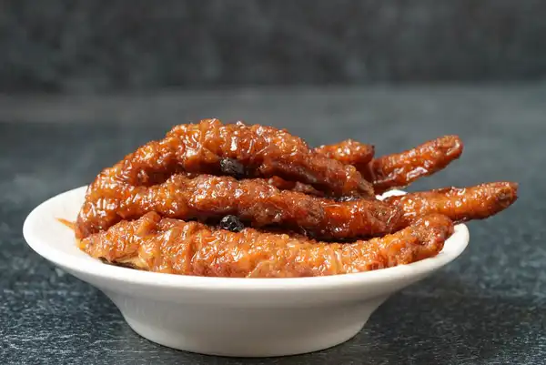

Chicken Feet

Description
Chicken feet is one of Cantonese cuisine's most famous shibboleths! The rich, savory sauce and delightful chewy texture is truly unique to this dish, but because it's really found on every single dim sum menu out there, you might not know just how much work goes into preparing these tasty toes.
We hope that once you give this recipe a try, you'll come away not only with a big plate of delectable chicken feet, but also a deep appreciation for your local dim sum chefs!
Ingredients
Main Ingredients
- 20 oz chicken feet
- 3 clove garlic
- 9 slice ginger
- 1 stalk green onion
- 1 oz shallot
- 1 oz fermented black beans
- 2 piece star anise
- 0.75 cup peanuts (can omit)
- 1 tbsp honey (can substitute with maltose)
- 1 tbsp Shaoxing wine
- 3 whole chili pepper
- 0.5 oz red bell pepper
- 12 oz corn oil (or any other refined, neutral cooking oil
- 1 tbsp corn oil (can take from reserved deep-frying oil
- 3 cup water
Sauce
- 1 tbsp Kikkoman® Black Bean Sauce with Garlic
- 2 tbsp Kikkoman® Oyster Sauce
- 2 tbsp Kikkoman® Soy Sauce
- 1 tbsp Shaoxing wine
- 0.50 tbsp Kikkoman® Tamari Soy Sauce (Kikkoman offers regular Tamari and Gluten Free Tamari, a wheat-free version.)
- 2 tbsp sugar
- 1 tsp salt
- 1 tbsp Kikkoman® Hoisin Sauce
- 1 tsp chili sauce